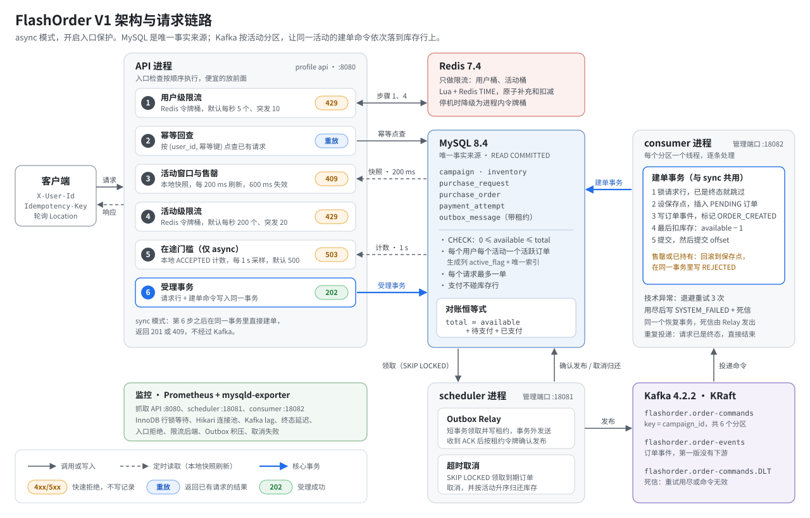

Projects限量抢购后端
FlashOrder
限量抢购后端：在热点库存、重复提交和中间件故障下不超卖、不重复建单，并用同机实验量化异步削峰的收益和代价。
Overview
这个项目是什么
一个限量抢购后端。
它跑通了限量抢购的完整链路：提交请求 → 预留库存并建单 → 模拟支付或超时释放 → 查到最终结果。系统支持同步和异步两种受理模式，两者共用同一个建单事务，所以能在同一台机器、同样的负载下直接对比。V1 的四个里程碑都已通过独立验收，代码公开在 GitHub。


Motivation
为什么要做
图书馆项目里，并发问题被“一个座位、一个时段”框住了，数据库唯一约束就能兜底。限量抢购难得多：瞬时请求远多于库存，所有扣减都落在同一行上；用户会重试，中间件也会出故障。
FlashOrder 想把这些更难的部分做一遍，并且用同机实验把异步削峰的收益和代价都量出来。
Challenges
遇到了什么困难
- 热点库存行瞬时请求远多于库存，所有扣减都落在同一行上，怎么不让锁等待拖垮入口？
- 重复提交回包丢失后用户重试，怎么既不多扣库存，也不返回与实际不符的结果？
- 占库存不付款下单不付的库存，怎么在 15 分钟后自动归还？
- 中间件故障Kafka 或 Redis 停机时，怎么继续有界地服务，而不丢请求、不超卖？
Architecture
系统怎么设计
MySQL 是唯一的事实来源；Kafka 按活动分区，让同一活动的建单命令依次落到库存行上；Redis 只做限流。
- API：六步入口检查
- 受理事务：请求行 + 建单命令
- Outbox Relay → Kafka
- consumer：建单、写结果、扣库存
- 客户端轮询结果
- 15 分钟未付 → 取消并归还
同步模式在受理事务里直接建单，不经过 Kafka。同一个工程按 Spring profile 拆成 api、scheduler、consumer 三种角色，可以一体运行，也可以分进程部署。
Engineering Decisions
为什么这样设计
所有一致性都交给 MySQL 的约束和事务来保证，Kafka 和 Redis 只负责削峰和限流，它们出错不会导致超卖。
- 两层去重：(user_id, 幂等键) 唯一索引 + UNIQUE(request_id)，幂等回查放在快速拒绝之前同一个键 40 份并发，只有 1 条请求、最多 1 笔订单，40 个响应完全相同。
- 业务拒绝只回滚到保存点，在同一事务里写 REJECTED拒绝结果和请求行一起提交，重试拿到的始终是同一个结果。
- 一人一单用生成列 active_flag + 唯一索引不需要单独的资格表，订单取消后资格自动释放。
- 库存行只存 total 和 available，扣库存放在事务最后；异步按 campaign_id 分区异步模式下 InnoDB 行锁等待为 0。
- Transactional Outbox：提交后才返回 202；Relay 租约领取、事务外发送Kafka 停机时仍能受理，恢复后自动补发。
- 消费者先锁请求行，已是终态就跳过；重试用尽写 SYSTEM_FAILED 和死信三类崩溃点注入后，同一请求最多一单，死信不会丢。
- Redis 令牌桶限流，停机时降级为进程内令牌桶快速拒绝不写任何记录，Redis 故障不影响正确性。
- FOR UPDATE SKIP LOCKED 领取到期订单支付与取消竞争、两个取消任务并发，都只产生合法的状态转换。
对账接口随时核对 total = available + 待支付 + 已支付。
Validation
如何验证
代价也量出来了：异步模式下客户端看到终态的 P95 从 596 ms 变成 9,538 ms，单活动库存吞吐也不比同步高。
- Kafka 停机（在途上限 500）：继续受理 693 笔，超放 193 笔，在理论上界约 220 以内；重启后 15.54 s 全部建单，对账差额为 0。
- Redis 停机：限流切换到进程内令牌桶，按实例数分摊配额，健康检查保持正常。
- 多活动并行：两个活动分到两个消费线程时，合计约 98.5 单/s，是单线程的 1.8 倍。
四个里程碑（同步基线 → 订单闭环 → 异步链路 → 保护与实验）都有写在设计稿里的过关条件，独立验收在临时 Docker 环境里复测后才合并；验收共记录 23 条问题或观察，18 条已关闭，其余不影响 V1 的结论。
这些是笔记本上的同机对比数据（i7-13650HX，Docker Desktop），不是容量结论。同步的吞吐上限还没测出来。
Lessons
我学到了什么
正确性交给数据库的约束和事务，中间件只负责削峰和限流——它们出错，系统可以变慢，但不能超卖。
- 异步削峰换来的是入口稳定，不是更快出结果；收益和代价要一起量。
还没解决的：单活动的建单由一条消费线程串行完成，本机约 50–70 单/s；只保证近似的先到先得；认证和支付都是模拟的。后续方向（未排期）首选消费者微批扣减，其次是真实认证、库存分桶，以及用 CDC 替代轮询式 Relay。
继续读：产品需求文档 ↗ · V1 设计稿 ↗ · 设计决策记录 ↗ · M1–M4 验收记录 ↗ · Campus Library